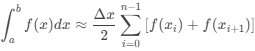

Ejemplos de entrada.
- Math.sin(x) de 0 a Math.PI
- x*x de 0 a 1
- Math.exp(x) de 0 a 2
- 1/x de 1 a 2
Damian Marquez Hernandez G2 - Ingenieria en sistemas computacionales
El método del trapecio es un método de integración numérica que se basa en aproximar el valor de la integral de una función mediante la suma de áreas de trapecios.

Calcular la integral de la función f(x) = x^2 en el intervalo [0, 1] con 4 particiones.
n = 4
a = 0
b = 1
Δx = b-a/n = 1-0/4 = 0.25
Xi = f(xi) = xi^2
Area del subintervalo = Δx/2 [f(x i)+f(x i+1 )